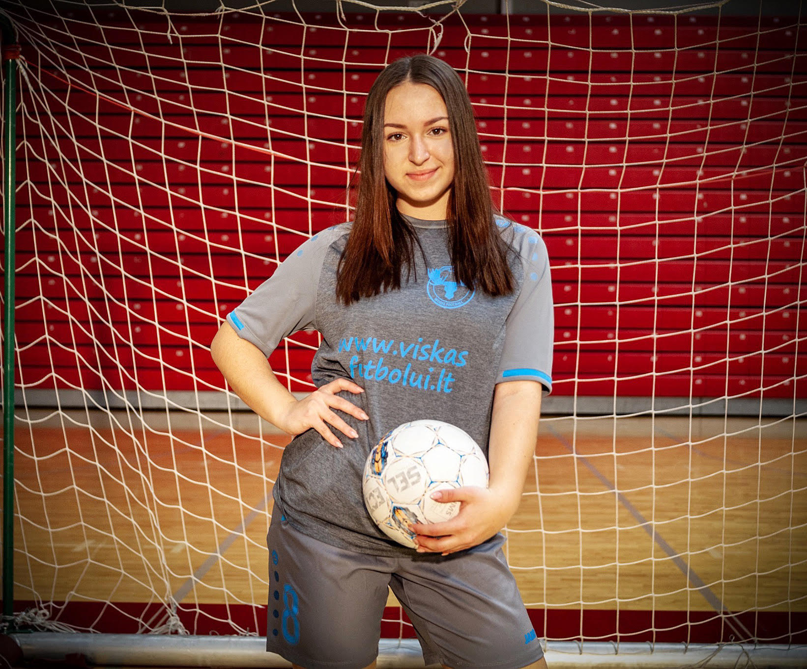

Introducing myself
Hello all!!!I am so happy that you are reading this and let’s start here)I am Veronika Levchenko an 18 years old girl from Ukraine from a small city Cherkasy.I am an extremely active person who tried almost every kind of sport within all my life.Namely,I was doing karate,swimming,dancing,playing long tannins,volleyball and so on...This list is really really long,however I have never expected this...
Me at LCC
In 2019 I have become a student of LCC international University.It is an amazing place where you have an opportunity not only to get a perfect education but also meet a lot of friends all over the world.You know,it is such a pleasant feeling that you can come to more that 15 countries and in every country you have a friend who will meet you their.So,personally,I do recommend you join our family with name LCC and you can find more information about us over here...LCC International University
How I found out about football?
Finally, when I have been studying at LCC for two weeks, I saw the story on Instagram that there was a women football section and I missed it. I was so excited that LCC wants to create a women’football team. Following this I met a girl who visited that section and started to ask millions of questions and since she couldn’t answer all of them at once, she offered me to go to the coach office and ask him. I immediately ran into his office and met a men’ football team manager.She answered all my questions and invited me to the first training.I didn’t have any additional thoughts at that moment. I was thinking only about “I want to be a member of this team”.So,it was the beginning.